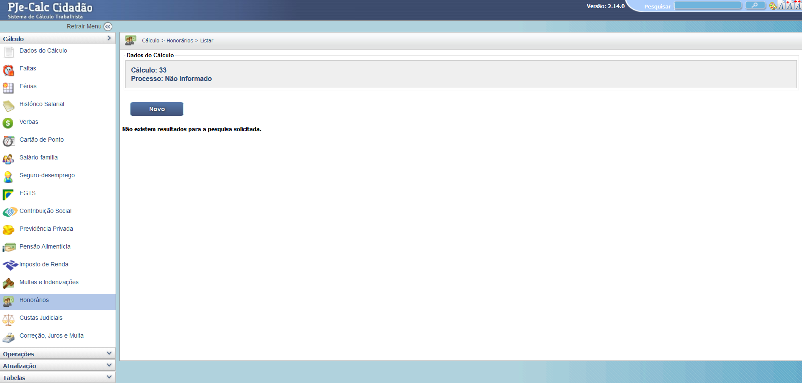
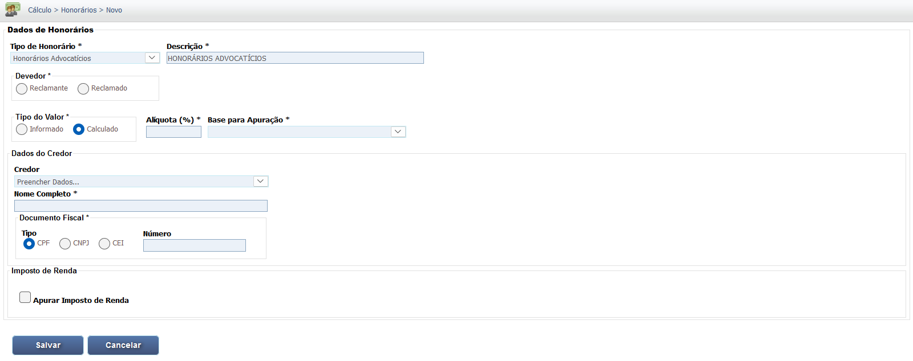
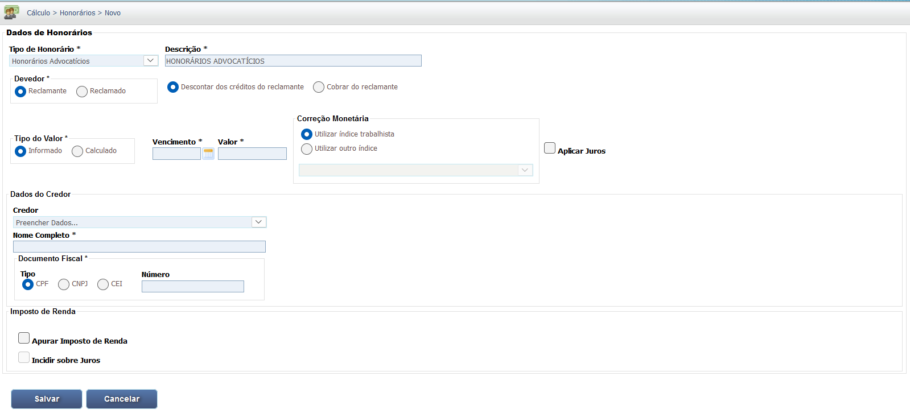

Manual Interativo de Cálculos Trabalhistas
Um guia completo e interativo para entender os cálculos na esfera judicial trabalhista.
Lançamento dos Honorários
O módulo de Honorários permite o lançamento detalhado de verbas honorárias, como Honorários Advocatícios (Sucumbenciais e Contratuais) e Honorários Periciais, aplicando o percentual devido sobre a base de cálculo definida na decisão judicial. É essencial cadastrar esses valores para o correto cálculo das deduções e do montante final devido a terceiros e advogados.
1. Lançamento de Novo Honorário
A tela inicial mostra o painel de Honorários e o botão para a inclusão de um novo item.
2. Configuração dos Dados Principais
O primeiro passo é definir o Tipo de Honorário (Advocatício ou Pericial), a Base de Cálculo (geralmente o valor da liquidação ou um valor específico) e a Alíquota (%) determinada na sentença.
3. Detalhamento e Credor/Devedor
É necessário indicar a Descrição (ex: Honorários Advocatícios da Reclamada) e, crucialmente, definir quem é o Credor (quem vai receber o valor) e quem é o Devedor (quem vai pagar o valor), alinhando-se à decisão judicial.
